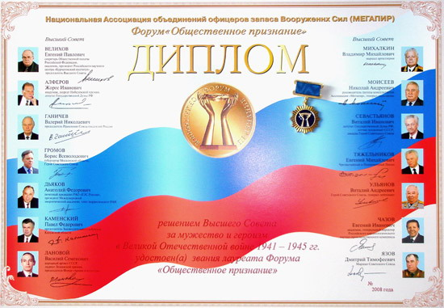

| 9 июля в Центре социальной реабилитации военнослужащих и членов их семей Тверской области состоялась церемония вручения десяти жителям Верхневолжья дипломов лауреатов Форума «Общественное признание» Национальной Ассоциации объединений офицеров запаса Вооруженных Сил
.
При вручении дипломов исполнительный директор Форума Борис Самсонов отметил: «Наш диплом вызывает уважение в первую очередь потому, что является знаковым документом. Он вручается от имени элиты, причем не дутой, а настоящей, представляющей все наше общество. Лауреаты Форума по праву испытывают чувство гордости за себя, за высокую оценку своего труда».
Форум «Общественное признание» был создан и зарегистрирован в конце 20-го столетия в Москве в ознаменование выдающихся заслуг огромного количества людей России перед Отечеством по инициативе Совета директоров Ассоциации, при активном участии Правительства Московской области, Правительства Москвы, Российского научного центра «Курчатовский институт», Союза писателей России, а также администраций ряда регионов и других общественных и государственных организаций, учреждений и предприятий. Решение о присвоении звания лауреата Форума и награждение дипломом и знаком принимает Высший Совет Форума в состав которого вошли академик Е.П. ВЕЛИХОВ – председатель Совета, Ж.И. АЛФЕРОВ, Б.В. ГРОМОВ, В.С. ЛАНОВОЙ, В.И. СЕВАСТЬЯНОВ, Е.М. ТЯЖЕЛЬНИКОВ, Е.И. ЧАЗОВ, В.Н. ГАНИЧЕВ, А.Ф. ДЬЯКОВ, Маршал Советского Союза Д.Т. ЯЗОВ, Герой Советского Союза генерал-лейтенант В.А. УЛЬЯНОВ, генерал-полковник Н.А. МОИСЕЕВ.
«Мы учредили Форум «Общественное признание» с задачей поддержать людей, которые не за страх, а за совесть служили и служат своей Отчизне. Мы ничего особенного не делаем, не обещаем золотые горы. Но мы оказываем им нашу общественную поддержку. Эта поддержка выражается в общественном признании», - так сформулировал основную задачу Форума академик Евгений Велихов.
Одним из десяти лауреатов Форума «Общественное признание» стал ответственный секретарь Фонда «Жить и Помнить» А.М. Терентьев. Диплом Форума ему был вручен за активное участие в деятельности ветеранских организаций и поисковой работе воинов, погибших в Великой Отечественной войне, увековечение памяти о них.
От души поздравляем Александра Михайловича с полученной наградой и желаем дальнейших успехов в работе!
Президент Фонда «Жить и Помнить» Л,М. Мусин. |